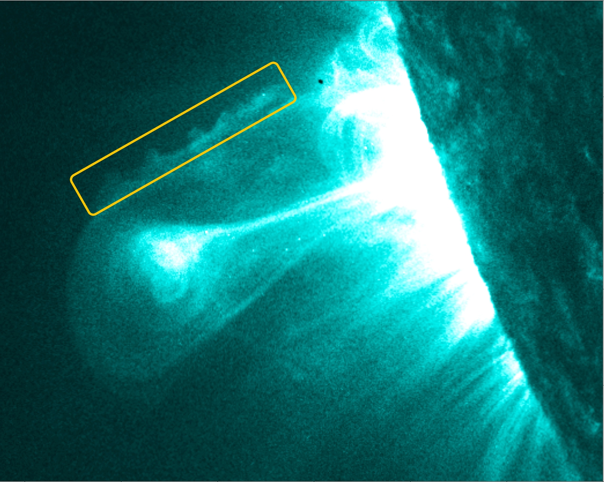

Słowem wstępu
Dlaczego zaczynam prowadzić tego bloga?
By dzielić się wiedzą
Wiedza nie jest jak ser. Dzieląc się wiedzą, nie tracicie jej, ale wzmacniacie i nadajecie jej dodatkową wartość. Zyskuję mnóstwo dzięki wspaniałym zasobom znalezionym w sieci i poza nią. Wydaje mi się uczciwym, że powinienem spróbować trochę tej wiedzy rozpowszechnić. Mam mnóstwo projektów, które zaczynam i rozgrzebuję. Próbuję je trzymać na GitHubie, ale mogą bardziej się przydać ludziom z właściwą dokumentacją i opisem.
Poza tym, wydaje mi się że mogę pomóc ludziom z rzeczami takimi jak Python, numeryka, dynamika nieliniowa, wychodzenie z vima, ustawianie i używanie Linuxa, dynamika płynów i plazmy, programowanie na kartach graficznych, machine learning... Moja perspektywa na te rzeczy zapewne nie będzie przydatna wszystkim, ale może przyda się chociaż komuś, a przynajmniej nie zaszkodzi.
Bo niektóre rzeczy po prostu są godne opowiedzenia o nich
Na świecie jest mnóstwo pięknej nauki i fizyki, a spora część tego piękna wychodzi w symulacjach, czyli mojej własnej sferze zainteresowań. Symulacja numeryczna to sztuka i nauka tworzenia ładnych wykresów, które mogą nam również powiedzieć coś o świecie lub modelach, których używamy do opisu go.chociaż większość z nas prawdopodobnie siedzi w tym dla wykresów
Spójrzcie na tą animację hydrodynamicznej niestabilności (Kelvina Helmholtza) w symulacji Kevina Schaala, umieszczoną tu za zgodą autora. Wyświadczcie sobie przysługę oglądając ją w pełnym HD.
Jeśli nie uważacie, że to wygląda pięknie, skonsultujcie się z lekarzem w sprawie podejrzewanego braku emocji. Dla mnie niesamowitość tego ma kilka źródeł:
- Wzorce tego typu występują w naturze. Chcecie przykładu? Tu jest zdjęcie z Biblioteca Pleyades:

To nasze własne Słońce, z dokładnie tymi samymi wzorcami pojawiającymi się w zaznaczonym fragmencie.
-
Niestabilność ta jest całkiem dobrze opisana na istotnych dla nas skalach czasowych i przestrzennych przez model matematyczny, którzy wymyślili ludzie stosujący sztukę
gładzenia się po brodach bądź podbródkachnauki. -
Nasze komputery są w stanie wykonać ten ciąg obliczeń i wypluć wizualizację w tego typu rozdzielczości. Ludzie dotarli na księżyc mając mniej - a nie mieli naszych obecnych wypasionych narzędzi, takich jak języki wysokopoziomowe, karty graficzne, autouzupełnianie w edytorach, czytelna dokumentacja, debuggery i Stack Overflow.
Słowem... W dzisiejszych czasach nic nie stoi na przeszkodzie, by usiąść do komputera i tworzyć przy nim fizykę i ładne wykresy.
Bo pisanie jest fajne
Poważnie. Jeśli nie próbowaliście płynnego pisania, spróbujcie. Dla mnie zdziałało cuda w kwestii strukturyzowania myśli i wynajdywania błędów w mojej własnej logice. Poza tym, przy tym, jak łatwo teraz postawić bloga tego typu, koszt dzielenia się przemyśleniami ze światem jest pomijalny.
Żeby mieć pozytywny wkład w rzeczywistość
Ktoś kiedyś był mądry. Będąc mądrym, powiedział,
Jakie są najbardziej istotnie kwestie w twoim polu, i dlaczego nad nimi nie pracujesz?
Przez ostatnie pół wieku mieliśmy w zanadrzu straszliwie niedofinansowaną technologię, która jest zdolna przetransformować nie do poznania krajobraz energetyki na całym świecie. Mówię tu o fuzji termojądrowej. W tej chwili orbitujemy wokół ogromnego reaktora demonstrującego to zjawisko, i zaczynamy wykorzystywać tą moc dzięki panelom słonecznym.
Miło patrzeć na rozwój w dziedzinie tych ostatnich. Jednakże, przy podnoszących się temperaturach naszej planety - a wzrost ten powodujemy my, jako cywilizacja, bezustannie pompując tlenki węgla w atmosferę, ten post jest sponsorowany przez przeciąg to może nie wystarczyć. Nie, dopóki nasze linie energetyczne nie są nadprzewodzące i nie możemy po prostu zasilić całego świata z afrykańskich pustyń, i nie, dopóki nasz najlepszy pomysł na przechowywanie dużych ilości energii to pompowanie wody pod górę. Do czasu innowacji w tych polach jesteśmy uwiązani do spalania związków węgla.
Czy na pewno?
Wielu ludzi przyjmuje ten pogląd, kiedy stawiają czoła powyższemu problemowi - jeśli w ogóle przyjmują naukowy konsensu, że to ludzie powodują globalne ocieplenie. Na pewno wielu polityków zdaje się prezentować ten pogląd. Skąd wiemy, że to prawda?
Chciałbym mieć wpływ na decyzje polityczne, ale niestety, nie mam takich zdolności. Ale to, na co być może mogę wpłynąć, to opinia publiczna - a wtedy mogę mieć nadzieję na propagację tej opinii.
Na łamach tego bloga chciałbym, pomiędzy innymi tematami, przedstawić tak obiektywny, jak mi się uda, status i perspektywy kontrolowanej syntezy termojądrowej jako potencjalnej bezpiecznej i czystej alternatywy dla energetyki opartej na związkach węgla. Dobrzy ludzie pracują nad tym już od dłuższego czasu i po raz pierwszy jesteśmy dość blisko - jeszcze kilka kroków w bardzo długim maratonie - do praktycznego zastosowania tego.
Bo mając przed sobą kryzys taki jak globalne ocieplenie, potrzebujemy wszystkich narzędzi jakie mamy.
Bo ten pomysł może kiedyś uratować świat, a to zdaje się być istotną kwestią.
Komentarze
Comments powered by Disqus